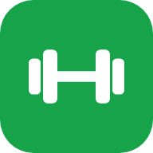

Deine App zum Abnehmen mit Sport. Sie rechnet dein Kalorienziel aus, zeichnet deinen Gewichtsverlauf auf und gibt dir einen Trainingsplan. Sie läuft im Browser, lässt sich aufs Handy installieren und funktioniert danach auch ohne Internet.
Grundumsatz und Gesamtbedarf nach Mifflin-St-Jeor, dein Tagesziel mit Defizit, Eiweiß- und Wasserziel.
Kurve mit 7-Tage-Trend und Ziellinie, BMI, Tempo pro Woche und optional der Bauchumfang.
19 Sportarten, geschätzter Kalorienverbrauch, Wochenminuten und Trainings-Serie.
Mahlzeiten mit Kalorien und Eiweiß, deine Favoriten mit einem Tipp, Nachtragen für vergangene Tage und ein Wasser-Zähler.
Trainingspläne für Einsteiger, Mittel und Profi. Jeden Tag abhaken, jeden Montag neu.
HIIT, Tabata, Plank oder eigene Zeiten. Mit Signalton, Vibration und Bildschirm-bleibt-an.
Tägliche Schritte eintragen, Ziel 8.000 am Tag.
14 Abzeichen, vom ersten Training bis zum Wunschgewicht.
Wiegen, Training, Wasser und Essen. Über den Handy-Kalender, auch wenn die App zu ist.
Nach dem ersten Öffnen ist die App auf dem Gerät gespeichert und läuft auch im Flugmodus.
Öffne die App einmal mit Internet. Danach liegt sie wie eine normale App auf deinem Startbildschirm.
Beim ersten Öffnen speichert die App alle ihre Dateien auf dem Gerät. Danach startet sie auch ohne Netz. Oben rechts zeigt sie dir, ob du gerade Online oder Offline bist. Deine Einträge werden in beiden Fällen sofort gespeichert.
Updates holt sich die App automatisch, sobald du wieder Internet hast. Die neue Version siehst du beim nächsten Start.
Unter Plan → Erinnerungen stellst du ein, woran die App dich erinnert: Wiegen, Training (nur an Trainingstagen deines Plans), Wasser und Essen eintragen.
Alles bleibt auf deinem Gerät. Es gibt kein Konto, und nichts wird an einen Server geschickt. Daraus folgt:
| Wert | Formel |
|---|---|
| Grundumsatz | 10 × kg + 6,25 × cm − 5 × Alter + 5 (Mann) bzw. − 161 (Frau) |
| Gesamtbedarf | Grundumsatz × Aktivitätsfaktor (1,2 bis 1,9) |
| Tagesziel | Gesamtbedarf − 300 / 500 / 750 kcal, mindestens 1.500 kcal (Mann) bzw. 1.200 kcal (Frau) |
| Fettverlust | ca. 7.700 kcal Defizit ≈ 1 kg |
| Training | MET-Wert × kg × Stunden |
| Eiweiß | 1,6 g pro kg (bezogen auf höchstens BMI 25) |
| Wasser | 35 ml pro kg Körpergewicht |
Alle Werte sind Schätzungen. Bei Vorerkrankungen, Schmerzen oder starkem Übergewicht sprich vor dem Start mit deiner Ärztin oder deinem Arzt.
Damit du die App am Handy öffnen kannst, braucht sie eine Adresse im Internet. Das geht kostenlos mit GitHub Pages:
/ (root). Auf Save klicken.https://renator57.github.io/Sport/. Diese am Handy öffnen und installieren.Der Offline-Modus braucht eine https://-Adresse. Wenn du index.html direkt als Datei öffnest, funktioniert die App, aber ohne Installation und ohne Offline-Modus.
index.html | Die komplette App |
README.html | Diese Anleitung |
manifest.webmanifest | Name, Farben und Icons für die Installation |
sw.js | Service Worker für den Offline-Modus. Bei Änderungen VERSION erhöhen. |
icons/ | App-Icons |
fonts/ | Schrift Barlow (lokal gespeichert, damit sie offline geht und keine Daten an Google fließen; Lizenz: OFL.txt) |